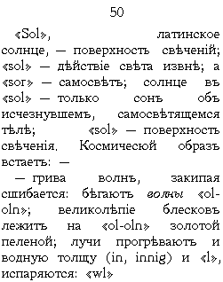
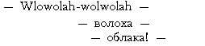
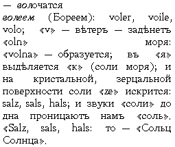
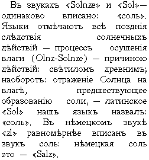
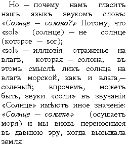
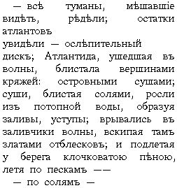
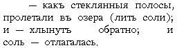
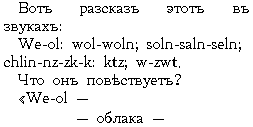
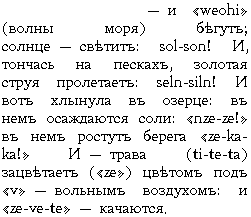
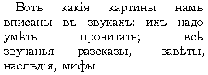

Glossolalia (Section 50)
GLOSSOLALIA

"Sol," the Latin sun, is -- a surface of luminescences; "sol" is -- the activity of light from inside; but "sor" is -- light-itself; the sun in "sol" is -- just a dream [son] of the disappeared, self-lit body; "sol" is -- a surface of luminescence. A cosmic image stands up: --
-- a mane of waves, beginning to boil/surge, falls/laps over: waves [volny]-- ol-oln are running; a magnificence of gleamings lies on "ol-oln" like a golden shroud; rays heat up the watery thickness (in, innig) and the "l's" evaporate: "wl"

--Wlowolah-wolwolah--
-- from afar --
-- clouds there are!--

--they're whisked on voluntarily (by Boreas): voler, voile, volo; "v" -- the wind -- touches the "oln" of the sea: "a wave" [volna] -- is formed; in "ya" the "k" is separated out" (salts of the sea); and on the crystal, looking glass surface of salt "z" sparks: salz, sals, hals; and the sounds "salt" penetrate us to the bottom "salt" "Salz, sals, hals: that is -- "Sol'ts" of the Sun."

In the sounds the Russian word for sun "Solnze" and "Sol" are -- identically inscribed: "salt [sol']." Languages note all the later consequences of solar actions -- the process of drying out of the moist (Olnz-Solnze) -- is the cause of certain actions: an ancient luminary: conversely: the reflection of the Sun on the moisture, preceding the formation of salt -- the Latin "Sol" our Russian language called "salt" [sol']. In the German language "zl" is even more evidently inscribed in the sound salt: German salt is -- "Salz."

But -- why does our language proclaim to us in the sound of the words "The Sun -- is salty"? Because "sol" the sun [solntse] is not the sun (which is -- sor); "sol" is -- an illusion, a reflection on the moisture, which is -- salty [solono]: in this sense the likeness of the sun on the sea's moisture, like the moisture itself is -- salty; however, it may be, that the sounds "salt" [sol'] in the sound of the "Sun" [solntse] have a different designation: "The Sun -- salifies-salts things" (it dries up the seas) and once again we are transported to an era of long ago, when the earth was drying out:

-- all the mists, which had been preventing us from viewing, thinned out; we saw the remnants of Atlanteans -- a blinding disk; Atlantis, departed into the waves, the summits of its mountain peaks shone: islandy dry lands; dry lands, gleaming in salt, grew out from the flood water, forming bays, terraces; waves tore into the little bays, boiling over there with golden gleamings; and flying up to the shore with tufted foam, flying along the sands --
-- along the salts --

-- like glassy strips, they flew into the lakes (to spill salt); and -- they gushed back; and the salt -- remained lying.

Here is that fairy tale in sounds:
We-ol: wol-woln; soln-saln-seln; chlin-nz-zk-k; ktz; w-zwt.
What tale does it tell?
"We-ol"--
-- clouds--

-- and "weohi" (waves of the sea) run: the sun -- shines: sol-son! And, refining itself on the sands, a golden stream flies past: seln-siln! And here it gushed into a little lake: in it salts settle down: "nz-z!" in it shorelines grow "z-a-k!" And -- the grass [trava] (ti-te-ta) blooms [zatsvetaet] ("z") like a flower [tsvetom] under the "v" -- with a wift of free air: "z-v-t" -- they rock back and forth.

Such are the pictures inscribed for us in sounds: you have to be able to read them; all sounds are -- narratives, testaments, heritages, myths.